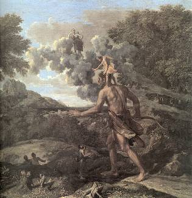
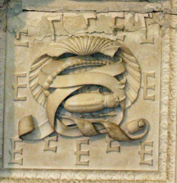
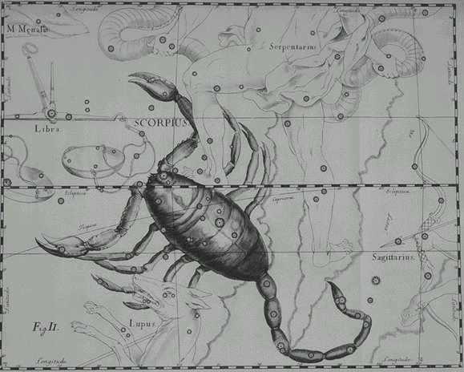
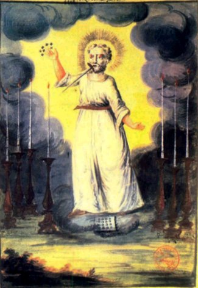
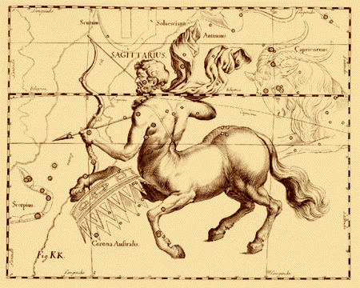
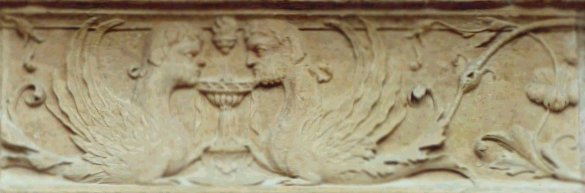
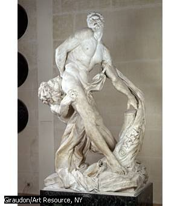

EMBLEMA XLIX.
revu le 9 janvier 2003
Infans Philofophicus tres agnoscit patres, ut Orion.
(L’enfant des philosophes compte trois pères, comme Orion1.)La Fable nous apprend qu’Hermès, Vulcain, Phœbus
Dans une peau de bœuf jetèrent leur semence,
Et que le grand Orion eut à la fois trois pères.
De trois pères aussi naît l’enfant de Sagesse :
Le Soleil le premier, et Vulcain le second ;
L’homme habile en son art est le troisième père2.
FUGA XLIX
Les femmes qui se prostituent à différents hommes conçoivent rarement des enfants viables à cause du mélange des diverses semences. Car la nature, dans la génération de l’homme et des animaux, n’admet que très rarement la superfétation. C’est pourquoi toute progéniture, qu’elle se compose d’un ou de plusieurs sujets, naît d’un père et d’une mère uniques, comme cela résulte des histoires et du sort de ceux qui en jugent autrement, celui en particulier de cette fameuse Marguerite, femme d’Herrmann, comte d’Henneberg, qui, en l’an 1276, mit au monde trois cent soixante-cinq enfants. Tous reçurent au baptême le nom de Jean pour les garçons, et celui d’Elisabeth pour les filles. Ils moururent ensuite et leur tombeau peut encore être vu, ainsi que le bassin de cuivre dans lequel ils furent baptisés, et l’inscription relatant l’histoire, dans l’église de Lausdun, à un mille de distance de La Haye, dans la direction de la mer, en Hollande. On dit que la cause de ce prodige fut la suivante : la comtesse voyant une pauvre femme porter dans ses bras des enfants jumeaux l’avait appelée adultère, tenant pour impossible que plusieurs enfants conçus ensemble eussent un seul père, et estimant qu’ils en avaient nécessairement plusieurs. La pauvresse, qui se savait pure d’une telle faute, lui avait alors lancé une imprécation et elle avait conçu en un seul moment et d’un seul homme autant de fois qu’il y a de jours dans l’année. C’est là certes un miracle qui a pour cause la vengeance divine ; mais dans l’œuvre philosophique ce qui est en d’autres circonstances contraire à la nature est facilement admis sous le manteau de l’allégorie. Ici en effet un enfant unique est dit avoir trois pères ou deux, et autant de mères3. C’est pourquoi Raymond, que cite le Rosaire, déclare :
« Notre enfant a deux pères et deux mères, parce qu’il est nourri avec amour, de toute la substance, dans le feu, et pour cette raison, il ne meurt jamais. »
De même Dionysos4 est appelé « Bimater » (qui a deux mères), lui que Jupiter tira, avant qu’il fût parvenu à maturité, du ventre de sa mère consumée, pour le coudre dans sa cuisse, de sorte que son père devint sa mère.
Mais cet enseignement est mieux mis en lumière dans la conception d’Orion qui est né, dit-on, des semences d’Apollon, de Vulcain et de Mercure mélangées et enfermées dans une peau de bœuf pendant dix mois. Cela serait proprement monstrueux et non simplement fabuleux, si sous cette enveloppe n’était caché un secret de la nature qui n’est pas accessible à tous. Lulle dans la Théorétique de son Testament5 attribue à ce même enfant philosophique un nombre égal de pères, et à peu près les mêmes. Le premier est le soleil, c’est-à-dire Apollon, ce qui veut dire que le soleil céleste est le premier auteur de cette génération, car, par sa vertu indicible et secrète ou astrale, il opère sur une certaine matière connue des philosophes comme sur la matrice d’une femme, et produit en elle un fils ou enfant semblable à lui-même auquel en vertu de ses droits paternels il remet et abandonne ensuite ses armes et les insignes de ses pouvoirs6 : la faculté de faire mûrir ce qui n’est pas mûr, et de teindre et de purger ce qui n’est ni teint ni purgé. Ce que le soleil, en effet, accomplit en mille années, son fils le réalisera en une demi-heure. C’est pourquoi afin que naisse en lui-même sa puissance mille fois plus grande que celle du soleil, son père le donne à instruire à Vulcain et en même temps à l’artiste, pour qu’ils cultivent son naturel généreux et qu’il reçoive d’eux un accroissement de vigueur. Ainsi Achille7, Jason8 et Hercule9 furent confiés à Chiron10 dans le même dessein, pour qu’il les instruisît. En effet Milon de Crotone11 qui, étant enfant, portait un veau, porta un bœuf, une fois devenu grand, grâce à cet exercice. Ce n’est pas sans motif qu’en plus du Soleil, Vulcain et l’artiste sont appelés pères de cet enfant, car le premier lui donna l’être mais les autres lui donnèrent sa qualité et sa grandeur. Et on ne peut pas attribuer aux maîtres, pour leur enseignement, un salaire proportionné, de même qu’on ne peut pas donner aux parents une récompense équitable pour l’œuvre de la génération. Ceux-ci façonnent le corps, ceux-là l’esprit. Si l’esprit est plus précieux que le corps, il n’y a pas lieu de témoigner moins de reconnaissance aux premiers qu’aux seconds. Lors de la naissance d’Orion Mercure a fourni la matière, Apollon la forme et Vulcain la chaleur ou cause efficiente externe12. De même aussi dans l’œuvre philosophique il convient de faire que trois pères paraissent avoir conspiré pour réaliser un enfant unique dans lequel les Philosophes trouvaient leurs délices.
Notes1. Pernety écrit, dans son Dictionnaire, qu'Orion eut pour père Zeus, Neptune et Mercure [Atalanta, XXXVIII]. L'enfant des philosophes est évidemment la Pierre et ses parents sont le Mercure, le Sel et le Soufre.
2. Scène singulière que celle qui nous est présentée sur cet emblème. Apollon [Phoebus] est à gauche ; on le reconnaît à son arc ; Mercure est à droite : on distingue le caducée, à terre. Au centre, Vulcain qui, en principe, est boiteux mais dont on ne distingue pas les jambes. Le troisième père est l'Artiste [Hercule, Cadmos, etc.]. Rappelons que le symbolisme d'Orion a déjà été examiné aux emblèmes XXXVIII, XLIII, XLIV [en particulier, un extrait des Fables Egyptiennes et Grecques, dans lequel Pernety énumère les allégories qui ont servi aux alchimistes pour évoquer le vase de nature]. Pernety fait d'Orion l'embryon hermétique, encore volatil avant qu'il ne soit fixé. Voici par ailleurs ce que raportent les mythographes sur Orion :sources : Apollodore, Bibliothèque: I,4,2 - Homère, Iliade: XVIII, 486 ; Odyssée: V, 121 - Virgile, Eneide: X,763 -Toute cette fable est un tissu de cabale. Les trois dieux sont les symboles des principes de l'oeuvre : Zeus [l'AIR], Poséidon [l'EAU] et Mercure [Mixte]. Michel Maier semble avoir voulu simplifier en citant Héphaïstos [FEU] pour bien faire voir que le feu secret [dissolvant] était essentiel dans cette affaire. De même pour Apollon [Soufre]. Le personnage commun est Hermès. Le vieil homme qui souhaite engendrer sans femme est l'équivalent du Mercurius senex de Jung. La peau [crwV] de boeuf est une indication sur la couleur que revêt la surface du composé en cette époque de l'oeuvre. [la peau de boeuf, en grec, se dit h bouV. On en fait des lanières ou des boucliers]. L'urine céleste est la rosée de mai. Examinons à présent les acteurs :sites consultés :
http://grenier2clio.free.fr/grec/orion.htm
http://perso.wanadoo.fr/georges.nitram/chap1.html
http://benoit.brosse.free.fr/private/Mythologie/O.htmlOrion était un chasseur de Béotie et le plus bel homme vivant. Il était fils de Poséidon (ou d'Hyrié) et d'Euryalé. Mais il existe une autre légende racontée par Ovide et Servius: un homme âgé reçut la visite de trois dieux, Zeus (Jupiter), Poséidon (Neptune), Hermès (Mercure). Il tua un boeuf pour honorer ses invités et en remerciement de son hospitalité envers les dieux, se voit proposer une récompense ; il choisit la possibilité d'engendrer sans avoir à passer par une femme. Les trois visiteurs urinent dans la peau du boeuf sacrifié, et lui conseillent d'enterrer cette peau pendant neuf mois dans la terre: naît alors Orion dont le nom est en rapport avec l'urine céleste.
D'abord il épousa Sidé qui était très belle mais aussi très fière. Elle fut précipitée dans le Tartare par Héra à qui elle avait voulu se comparer.
Un jour, dans l'île de Chios, Orion tomba amoureux de Méropé, fille d'Oenopion le fils de Dionysos. Oenopion avait promis de donner Méropé en mariage à Orion s'il débarrassait l'île des dangereuses bêtes fauves qui l'infestaient.
Mais, lorsque ayant enfin terminé la tâche qu'on lui avait assignée il demanda qu'elle devînt sa femme, Oenopion fit courir le bruit qu'il y avait encore des lions, des ours et des loups dissimulés dans les montagnes et il refusa de tenir sa promesse. Une nuit, Orion, découragé, but toute une gourde du vin d'Oenopion qui l'échauffa à tel point qu'il fit irruption dans la chambre à coucher de Méropé et voulut lui faire violence. Lorsque vint l'aube, Oenopion appela son père qui lui envoya des satyres pour faire boire à Orion encore plus de vin; celui-ci s'endormit enfin profondément; Oenopion lui creva alors les deux yeux et le jeta sur le sable au bord de la mer.
Un oracle annonça que l'aveugle retrouverait la vue s'il se rendait à l'est et tournait ses yeux en direction d'Hélios à l'endroit où il se lève de l'Océan. Orion prit une petite barque, se mit à ramer et, se guidant au son du marteau d'un Cyclope, il atteignit Lemnos. Là il pénétra dans la forge d'Héphaïstos, saisit un jeune apprenti du nom de Cédalion et le mit sur ses épaules afin qu'il le dirige. Cédalion guida Orion sur mer et sur terre jusqu'à ce qu'il fût parvenu enfin à l'Océan lointain; là, Eôs s'éprit de lui et son frère Hélios lui rendit la vue.Après avoir été à Délos en compagnie d'Eôs, Orion revint pour se venger d'Oenopion qu'il ne parvint pas à découvrir à Chios, car il était caché dans une chambre souterraine que lui avait construite Héphaïstos. S'étant embarqué pour la Crète où il pensait qu'Oenopion aurait pu s'enfuir pour se mettre sous la protection de Minos son grand-père, Orion rencontra Artémis qui, comme lui, avait la passion de la chasse. Elle le persuada bientôt d'oublier sa vengeance et de venir plutôt chasser en sa compagnie.
Mais Apollon savait qu'Orion n'avait pas refusé l'invitation d'Eôs à partager sa couche dans l'île sacrée de Délos. Craignant donc que sa soeur Artémis ne se montre aussi sensible à son charme qu'Eôs, Apollon se rendit auprès de la Terre-Mère et, lui ayant répété avec perfidie ce dont s'était vanté Orion, il fit en sorte qu'Orion fût poursuivi par un monstrueux scorpion. Orion attaqua le scorpion d'abord avec des flèches, puis avec son épée, mais pensant que la mer était l'armure la plus sûre, il plongea dans les flots et nagea en direction de Délos où il espérait qu'Eôs le protégerait.
Apollon appela alors Artémis: « Tu vois, là-bas très loin, cette chose noire qui flotte sur la mer, près d'Ortygie ? C'est la tête d'un méchant appelé Candaon qui vient de séduire Opis, une de tes prêtresses. » or, Candaon était le surnom d'Orion en Béotie mais cela, Artémis l'ignorait. Elle visa attentivement lâcha sa flèche, et se lança à la nage pour retrouver sa victime. Lorsqu'elle vit que c'était Orion, elle implora Asclépios de le ressusciter. Celui-ci y consentit mais la foudre de Zeus anéantit Orion avant qu'il puisse intervenir. Artémis plaça alors l'image d'Orion et de son chien Sirios parmi les étoiles où il est pour la nuit des temps poursuivi par le Scorpion. Dans une autre version il tenta de faire violence à Artémis elle même.

FIGURE I
(Orion aveugle, guidé par Cédalion)
- Hyrié [UrieuV] est désigné comme le père d'Orion. On en connaît un autre, fils de Poséidon et fondateur de la ville d'Hyria. Orion serait donc, non pas le fils, mais le petit fils de Poséidon.
- Euryalè [Eurualh] est la mère d'Orion. Son nom [que l'on peut décomposer en eurooV - alh] évoque littéralement le « mouvement de l'esprit qui coule bien, qui est abondant », épithète du second Mercure.
- Sidé est la première épouse d'Orion : on n'en parle en général que peu ; c'est dommage car Sidh [Sidé], c'est aussi le grenadier et la grenade, allusion explicite au Soufre [teinture]. La légende rapporte que Sidé, qui vouait se comparer à Héra, fut précipitée dans le Tartare : ce n'est pas autre chose que fait l'Artiste qui met au creuset ses matières.
- le cas de Mérope [Meroph] a été vu aux emblèmes XXXVIII et XXXVI. C'est une indication sur une terre argileuse. Son père Oenopion [Oinopiwn] était roi de Chios [la terre de Chio était réputé pour être ce que les chimistes du début du XIXe siècle appelaient de l'argile pure, c'est-à-dire blanche]. Son nom peut être décomposé en oinh [cep de vigne] et piwn [gras, fécond]. Chio est une île connue pour se vignobles [notez que le chio est une pièce que les verriers fixent sur l'ouverture du four de la glacerie]. Sur les rapports du vin avec le magistère et avec Bacchus, voyez l'emblème XLIV.
- le travail qu'Oenopion confie à Orion n'est pas sans évoquer celui d'Hercule, dans les écuries d'Orgias : là, il s'agit de débarasser l'île des bêtes sauvages, ce qui revient à dépurer le laiton. Autrement dit, de faire du chien enragé et du loup, un cerf et une licorne.
- le sort funeste qui suit, d'Orion aveuglé, rejoint la scène de l'Odyssée où Ulysse enfonce un pieu dans l'oeil du Cyclope Polyphème [cf. Atalanta, XLV et XVI] ainsi que celle dans laquelle Apollon tue les Cyclopes.
- d'ailleurs, c'est en se guidant du son d'un marteau de Cyclope qu'Orion parvient à Lemnos [c'est à Lemnos que vont Ulysse et Diomède pour décider Philoctète à se joindre à eux avec les flèches d'Hercule et de rejoindre l'armée des Achéens, cf. Atalanta, XX : préfiguration de la fin d'Orion - voyez aussi sur Lemnos l'Atalanta, XXV. Il est évident qu'Orion a été guidé par un Cyclope forgeron qui travaille comme aide-forgeron d'Héphaïstos : il s'agit peut-être de Pyracmon - l'enclume - ou d'Acamas - l'infatigable - ], où il expose ses yeux à la lumière du soleil levant, quand Eos aux doigts rosés apparaît.
- Cédalion [Khdaliwn] : serviteur d'Héphaïstos, il sert de guide à Orion aveugle. Là encore, on a un pré écho du caractère funeste, sinon funèbre par les mots qui entourent Cédalion [khdeia, khdeioV], qui se rapportent au soin qu'on doit prendre d'un mort, à la sollicitude dont on doit entourer un tumulus.
- résurrection : Orion recouvre la vue et il séduit Eôs aux doigts rosés [cf. Atalante, I et l'humide radical métallique -].
- retour d'Orion à Chios qui prend pied, auparavant, à Délos, où il s'unit à Eos. Mais il ne retrouve pas Oenopion qui est caché par Héphaistos [on n'a pas quitté la phase de dissolution, malgré les apparences ; il est remarquable de voir que le FEU cache ici les belles grappes de raisin bien gras qui distinguent le Soufre rouge et la concordance singulière entre la Fable et la cabale doit être notée]. Notez qu'Orion n'a pas séjourné à Délos, signe que le Soufre n'est pas encore réincrudé ; tout juste les couleurs de la queue de paon ont-elles été vues [l'iris], que l'on trouve par la parabole d'Orion retrouvant la lumière du Soleil.
- complot d'Apollon contre Orion : Apollon se rend auprès de la Terre-Mère [1, 2, 3, 4, 5, 6,] pour aviser.
- Orion est poursuivi par un scorpion monstrueux et lui échappe en s'entourant d'une cuirasse invincible : l'eau salée. Orion, on l'a deviné, symbolise la conscience, borne au-delà de laquelle [orion] soit, l'on verse dans le royaume d'Hadès [Ploutos] soit, l'on s'incarne : tel le Petit Prince de saint Exupéry qui change de planète en se laissant piquer par un serpent du désert, Orion montera au ciel s'il est piqué par le scorpion, c'est-à-dire qu'il s'incarnera au nombre des constellations [il n'est pas facile de faire voir ce trait de cabale qui conssite tout uniment en l'envenimation du Monde, résultat fatal de l'incarnation de l'Âme]. Il sait qu'en principe, dans la mer [dans l'eau salée, le Mercure], il est invincible. Mais ici, son talon d'Achille, c'est sa tête.

FIGURE II
(caisson du plafond de la chapelle de l'Hôtel Lallemant, détail - cliché Alain Mauranne)L'irruption du scorpion dans cette scène est bien traduite par la figure II. Elle donne à voir un scorpion que l'on a du mal à distinguer initialement, entrelacé qu'il est dans ce phylactère blanc, lui-même torsadé, qui constitue le Mercure. Le fait qu'une mérelle se détache en arrière plan va tout à fait dans le sens de la parabole : la terre est proche, de toute évidence et le scorpion est le signe de l'envenimation du Monde, c'est-à-dire de la chute de l'Ange [à comprendre au sens hermétique, cela va de soi]. Le E majuscule [E] vaut 5, chiffre de la quintessence. Le scorpion [skorpioV] est étroitement associé au Soufre : le tournesol [hliotropion] s'appelle encore queue de scorpion [skorpiouron].
- dernier épisode : Apollon, avec sa fourberie habituelle dont on a déjà vu des exemples, fait croire à Artémis qu'un certain « Candaon » vient de séduire Opis [opiV : vengeance divine, mais aussi providence divine. Au monde des Dieux, le mal et le bien sont souvent confondus. Ce n'est, bien sûr, pas opiV qu'il faut lire, mais WpiV, c'est-à-dire Artémis ; c'est un petit trait de cabale], l'une de ses prêtresses. Candaon [Kandawn] est en fait le surnom d'Arès [qui ne fut pas toujours heureux au combat : Hercule lui perça la cuisse d'une de ses flèches]. C'est la fin - provisoire - d'Orion, qui brille maintenant au ciel de mille feux, poursuivi à jamais par le Scorpion.Ce sera pour nous l'occasion de reprendre notre tour du monde zodiacal et li ne fait point de doute que le Scorpion est là, logiquement lié au Sagittaire [la flèche que lance Artémis contre Orion en est la marque].
Le Scorpion. Nous en avons fait un signe d'AIR alors que les astrologues en font un signe d'EAU. Le Scorpion passe pour être le domicile nocturne de Mars, Vénus y est en exil et la Lune s'y trouve en chute. La constellation apparaît très bas sur l'horizon sud, région traversée par la Voie lactée ; bien qu'on trouve dans certains documents très anciens la silhouette d'un reptile ou d'un crocodile, la plupart des peuples du passé s'accordaient à voir dans cette constellation le venimeux arachnide au redoutable aiguillon. Scorpion elle fut pour les Egyptiens, les Arabes et pour les Grecs, qui y découvrirent, comme vient de le voir, le moyen utilisé par Apollon [certains disent Junon] pour tuer le géant Orion. On peut admirer le Scorpion vers 23 heures, pendant la première quinzaine de juillet [non loin de la Canicule].
- le premier décan représente un animal terrestre qui s'avance avec prudence et sournoisement, près d'une eau verdâtre. Ce décan montre la ruse et la dissimulation ; il ne permet plus d'abandonner ce qui a été commencé. C'est la deuxième roue du feu de roue qui est ici engagée, consistant en une dégression très progressive de la température. L'astre qui domine est Antarès [le coeur du Scorpion ou « anti-Mars »]. L"histoire de l'astronomie s'accorde bien avec l'hermétisme [le Scorpion est le lieu où la lumière surgit des ténèbres, aussi étrange que cela puisse paraître], puisque c'est dans cette constellation qu'eut lieu la plus ancienne apparition de nova dont on trouve mention dans les sources occidentales. Hipparque observa avec stupeur ce phénomène céleste inattendu par une nuit de juillet de l'année 134 avant notre ère à Rhodes [on se souvient de la pluie d'or qui y tombe lorsque Zeus s'unit à Danae] ou peut être à Alexandrie. Comme le raconte Pline l'événement troubla si profondement le grand mathématicien et astronome qu'il le poussa à rédiger le premier catalogue systématique des étoiles visibles des régions du bassin méditerranéen« afin que la postérité puisse se rendre compte des changements qui se produisent réellement dans le ciel. »
La nova d'Hipparque a été récemment soumise à un examen critique de la part de certains historiens de l'astronomie d'après lesquels l'événement raconté par Pline devrait plutôt être rattaché à la comète de 136 avant J.-C. qui inquiéta le peuple romain. L'apparition de vagabondes célestes echevelées dans le Scorpion était en effet considérée comme le présage funeste d'une invasion de serpents et de sauterelles.

FIGURE III
(le Scorpion - atlas de Hevelius)Nous avons suffisamment insisté ailleurs sur le venin [ioV] pour qu'on nous permette de passer outre. Sans venin, c'est-à-dire sans rouille, l'oeuvre est, en effet, parfaitement impossible. Aussi bien Apollon était-il considéré comme erusibioV, celui qui préserve les blés de la rouille [qu'il faut entendre « nielle »]. C'est là que gît un des secrets de l'oeuvre : obtenir la teinture d'une rouille et la projeter en masse dans le corps de la Pierre. Ce secret a été gardé sous le couvert d'une parabole : la chute de l'Âme. On trouve cette phrase, dans l'Asclepius :
« Pourquoi [demande Asclépius à son maître], pourquoi donc, ô Trismégiste, a-t-il fallu que l'homme [entendez le Corps] fût établi dans la matière au lieu de vivre en la félicité suprême ou Dieu habite ? » [Ascl. 7, p 304.11]
C'est par cette citation que A.J. Festugière entame le chapitre II, la Chute de l'Âme, dans le tome III de la Révélation d'Hermès Trismégiste [Les Belles Lettres, 1990].
Arnobe démontre que si les âmes étaient vraiment filles de dieu, il serait impossible d'expliquer leur présence sur la terre. Festugière cite ce passage, des plus révélateurs, du Kore Kosmiou :
« Si les âmes, comme on le raconte, étaient de la race du Seigneur et que l'âme eût été engendrée par la Puissance Souveraine [...], elles habiteraient toujours la cour du Roi et n'auraient point quitté ce lieu de la béatitude où elles connaissaient et gardaient en mémoire les doctrines les plus augustes ; elles n'eussent point, par un mouvement irréfléchi, gagné ces lieux terrestres où elles habitent des corps opaques, étroitement mêlées aux humeurs et au sang, dans ces outres d'excréments, dans ces jarres immondes d'urine. » [II 37].
Celui qui n'a pas étudié l'hermétisme selon un esprit droit ne pourra pas intégrer ce langage et l'adapter à l'alchimie. Car ce qu'il faut comprendre, c'est que l'âme tire son origine du Monde, ce qui explique pour l'alchimiste, qu'elle soit, dès le départ, pour ainsi dire viciée, et que son retour sous forme corporelle [réincrudation] exige qu'elle soit « ennoblie », ce qui signifie que, d'amorphe qu'elle était, elle soit disposée en forme cristalline. Pour expliquer que l'âme s'incline ainsi vers le corps [c'est ce que Festugière appelle le mal de l'âme], on a donné deux raisons. Selon les uns, la première tiendrait à :
« l'altérité première selon Plotin, la fuite loin de Dieu selon Empédocle, le repos qui consiste dans le changement selon Héraclite, une démence ou une déviation selon les Gnostiques, le jugement erroné du libre arbitre selon Albinus. »
Mais aucun de ces grands philosophes n'a émis l'hypothèse que ce n'était peut être pas l'âme qui avait fui loin de Dieu, et que c'était peut-être Dieu lui-même qui s'était éloigné après avoir accompli son ouvrage, ou plus exactement, qui s'était effacé. Nietzsche a écrit ces phrases, célèbres, qui prennent pourtant un relief singulier vues sous l'angle de la doctrine hermétique :
« Dieu mort, nous voulons, nous, que le surhumain vive. Et c'est seulement depuis que Dieu est dans la tombe que vous êtes ressuscités ! » [Friedrich Nietzsche, Ainsi parlait Zarathoustra (1883-1885), in Œuvres, coll. Bouquins, éd. Robert Laffont, 1993, p. 510]
Nous n'entrerons pas dans le débat philosophique. Notre but ici est de faire voir ce que, par une analogie portée de manière pondérée et lucide, on peut rapporter d'utile à la pensée alchimique. Posons que l'humain est « l'amorphe ». Que Dieu est l'Esprit. Et que le surhumain soit la forme « cristalline ». Ce que dit Nietzsche est dès lors clair, sans que l'on prenne, en quoi que ce soit, part au débat, d'ailleurs fondamental, sur l'existence de Dieu. Nous serons d'accord, en effet, avec d'autres philosophes qui ne nient pas l'existence de Dieu. Ainsi, de Descartes, écrivant :
« Par le nom de Dieu j'entends une substance infinie, éternelle, immuable, indépendante, toute connaissante, toute-puissante, et par laquelle moi-même, et toutes les autres choses qui sont [...] ont été créées et produites. » [Méditations métaphysiques, 1641 - Méditation 3e, trad. duc de Luynes, Bibliothèque de la Pléiade, p. 294]
L'extraordinaire est que Descartes a raison « en soi » et que rien, dans sa proposition, ne peut être pris en défaut de logique. Même revue à la lumière des dernières théories sur la genèse de l'Univers, en passant par A. Koyré ou Merleau-Ponty, rien dans ce qu'écrit Descartes [pris en soi] n'est faux. L'alchimiste peut, sans en détacher un mot, reprendre à son compte ce qu'écrivait le philosophe. Voici un autre extrait :
« Ayant accoutumé dans toutes les autres choses de faire distinction entre l'existence et l'essence, je me persuade aisément que l'existence peut être séparée de l'essence de Dieu, et qu'ainsi on peut concevoir Dieu comme n'étant pas actuellement. » [Méditations métaphysiques, 1641 - Méditation 5e, trad. duc de Luynes, Bibliothèque de la Pléiade, p. 312]
Ici, l'alchimiste peut fort bien désigner nommément et séparer en substances distinctes l'existence de l'essence, par le biais de son Mercure. Il posera en fondement que tout ce qui est essence est pur esprit [dissolution] et que l'existence commence là où la lumière paraît ; notez d'ailleurs que la formule peut être inversée sans s'en trouver compromise en soi : l'Artiste peut formuler que l'existence est cet état de quintessence où la dissolution a placé la matière et que l'essence est représentée par ces poudres qu'il projette dans son creuset. Pascal écrivait :
« C'est le coeur qui sent Dieu, et non la raison. Voilà ce que c'est que la foi, Dieu sensible au coeur, non à la raison. » [Pensées, 1670 (posth.) - fragment 278, éd. L. Brunschvicg, Classiques Hachette, p. 458]
Voilà pour ainsi dire paroles d'évangile pour l'alchimiste. Il lui est évident que le coeur représente l'Âme de sa matière ; qu'en Dieu se trouve le pur Esprit. Et que la raison résulte de l'apparition de la conscience, et nécessite l'incarnation de l'Âme. Ce qu'à bon droit révoque en doute Pascal, quand il dit que Dieu n'est pas sensible à la raison, soit que l'âme se trouve encore corporifiée, soit qu'elle ait été réincrudée. Leibniz dit ceci :
« On peut juger aussi que cette substance suprême qui est unique, universelle et nécessaire, n'ayant rien hors d'elle qui en soit indépendant, et étant une suite simple de l'être possible, doit être incapable de limites et contenir tout autant de réalité qu'il est possible. » [La Monadologie, 1721 (posth.) - § 40, Le Livre de poche, LGF, 1991]
La première partie de la phrase aurait pu être écrite par un alchimiste [Leibniz ne l'était pas, contrairement à Newton] et, dans le cadre de son petit monde, son creuset, l'Artiste sait bien que seul Protée règne en maître, pesant, en nature, le poids des substances [cf. travaux de Daubrée et Delesse]. Nous n'invoquerons pas ici les psychologues et les grands psychiatres que furent Freud et Jung [surtout Jung] parce qu'ils ont compris, comme le fait remarquer Freud, que :
« Lorsqu'il s'agit de questions de religion, les hommes se rendent coupables de toutes les malhonnêtetés, de toutes les inconvenances intellectuelles possibles.[...] » [L'Avenir d'une illusion - VI, trad. A. Balseinte, J.-G. Delarbre et D. Hartman, coll. Quadrige, PUF, p. 33]
Et c'est là où les alchimistes ont pris leur revanche. On chercherait en vain un alchimiste [ayant existé ou pas d'ailleurs, comme Artéphius ou Basile Valentin] ayant écrit un traité à caractère sectaire - nous ne parlons pas des illuminés qui ne sont pas plus nombreux que dans d'autres corps de pensée - ou qui blesse volontairement ou non l'humain. Tout simplement, les alchimistes, dans leurs écrits, ont réussi à prendre la mesure de la Nature, à considérer que par leurs travaux, ils pouvaient se proclamer démiurges, en une sorte de panthéisme confinant au sublime et en ayant la preuve par les cristaux qu'ils trouvaient au fond de leurs creusets, qui avaient le pouvoir de rayer le verre.

FIGURE IV
(l'Alchimie de flamel - extrait du Livre d'Abraham Juif -
l'alchimiste comme démiurge)- le deuxième décan du Scorpion représente l'image du serpent Ouroboros : la tête rejoint la queue, bouclant ainsi un cercle et formant le symbole gnostique et sacré de ce qui est sans fin ni commencement, symbole dont ne parlent que secrètement et dévotement, les prêtres des Initiations suprèmes. Pour nous, n'ayant été initié par personne [Ulysse], nous ne serons donc point parjures, ni liés par quelque réserve que ce soit. L'étudiant comprendra que ce serpent est l'hiéroglyphe de l'eau permanente, c'est-à-dire qui doit pouvoir être tenue au feu tant que le feu de roue tourne, d'abord rapidement [première roue], puis de plus en plus lentement [deuxième roue]. Le Mercure, cependant, va peu à peu se sublimer lui-même, c'est-à-dire s'évaporer. Il est clair que le cercle inscrit par le serpent va, dès lors, diminuer de taille jusqu'à ce qu'il ne représente plus qu'un point : la fixation est alors totale. Ce décan est donc le lieu du zodiaque qui permet d'apporter de la perfection dans l'oeuvre, de la réaliser immortelle et là encore, le retour n'est pas possible, tout comme dans le premier décan. Seul le prudent, le Sage, saura trouver sa voie dans le labyrinthe, puisqu'il est évident qu'il a vaincu le Minotaure, quitté la chambre centrale et qu'il lui faut suivre son fil d'Ariane en sens inverse, c'est-à-dire passer de l'état de dissolution totale à l'état terrestre. C'est cette opération qui est nommée par les alchimistes, réincrudation.
- le troisième décan représente un loup qui hurle à la mort ; sa silhouette svelte se détache sur un fond de pleine lune. Ce décan, contrairement à ce que pensent les astrologues, n'est pas celui où l'âme est veule et où elle fait face, difficilement, à un destin contraire. Car notre loup, le lecteur l'aura compris, n'a rien à voir avec celui qui dévore les métaux de Basile Valentin [l'antimoine vulgaire]. C'est le loup pris comme frein, grappin, c'est-à-dire comme le lien du Mercure, qui permet à l'Artiste d'inssufler un peu de « liant » à sa matière, en sorte de ne pas perdre le fixe et que le volatil ne s'épuise qu'à la toute fin du travail, dans le signe des Poissons. Ce loup aide à la manifestation de la lumière. Une multitude de textes de toute origine [chinoise, japonaise, coréenne, arabe - les plus précis - et européenne] relatent l'apparition et l'observation d'une étoile nouvelle en l'an 1006. Cette étoile nouvelle à été découverte en Chine le 1er Mai 1006, dans ce qui est devenu la constellation du Loup.
Pendant quelques jours, la brillance de la nouvelle étoile augmenta, devenant supérieure à celle de Vénus, et atteignant un éclat comparable « au quart de la plein lune », donc visible en plein jour. Puis l'éclat se mit à diminuer, mais l'étoile resta observable pendant plus de deux ans.Nous allons à présent étudier le Sagittaire, signe congénère du Scorpion. Le Sagittaire peut être considéré comme l'avant dernier poste du Mercure. C'est aussi le dernier des signes de FEU. Le signe a déjà été évoqué bien des fois, notamment lorsqu'on a parlé des Centaures, dans la section Fontenay. C'est d'une vaste constellation dont nous entendons entreprendre l'étude. Elle fait partie de la bande zodiacale que le Soleil traverse aussitôt après le solstice d'hiver. Bien que généralement identifiée par les Anciens à un centaure ou à un archer géant, le Sagittaire adopta d'autres formes. Chez les Hébreux, d'après quelques phrases attribuées à Jacob, sa forme rappelait celle du symbole tribal de l'arc de Manassé [du nom d'une des fils de Joseph, l'une des douze tribus d'Israël, établie sur les rives du Jourdain. A ne point confondre avec Manassé, roi de Juda]. Il devint l'Evangéliste Matthieu pour les Chrétiens à une époque plus tardive. Chez les Babyloniens, le groupement des astres dans cette région céleste rappelait le roi géant de la guerre, et on en retrouve la tradition dans de nombreux bas-reliefs, tandis que les Arabes, tout en admettant la silhouette classique, voulurent y découvrir un troupeau d'autruches se désaltérant et accompagnées d'un gardien. L'intérêt hermétique de la formation du Sagittaire vient aussi de ce qu'elle est contigue au nord, au Serpent [Queue], à l'Ecu de Sobieski et à l'Aigle ; au sud par le Téléscope et la Couroinne Australe [nous avons vu la Couronne Boréale dans l'emblème XLVII]. Enfin, à l'ouest, par le Scorpion et Ophiucus.

FIGURE V
(le Sagittaire - atlas de Hevelius)- le premier décan est fidèle à l'idéogramme de base du zodiaque astrologique et montre un centaure, à la tête bienveillante et intelligente, où l'on ne reconnaît pas les traits de la famille d'Ixion. Ce centaure a dû être élevé à l'école de Chiron, à moins qu'ilne s'agisse de Chiron lui-même. Ce décan, selon nos modernes Chaldéens, est propice à l'élévation spirituelle, il donne du bon goût [du meilleur esprit]. Une prudence instinctive rend ici l'Artiste maître de son FEU. Faut-il rappeler que Jupiter est le domicile du Sagittaire [Zeus est pourtant maître de l'AIR, alors qu'Héphaïstos l'est du FEU]. Il est vrai que Zeus est maître de la foudre, le FEU de l'AIR, acué d'une certaine quantité d'EAU. Mercure y est en exil [le dernier signe de Mercure étant le Verseau, lui-même faisant suite immédiatement à la Vierge, si l'on veut bien croire l'ordre des opérations que nous avons données, à l'emblème XLV.] C'est le signe avant coureur de la réincrudation, qui ne s'affirme complètement que dans le signe du Scorpion. C'est par tradition un indicateur sur le FEU [la vertu de l'Esprit], c'est-à-dire dans le sentiment de l'Âme, encore qu'à cette époque, où le Soufre est sublimé, il soit abusif de parler de conscience.
Un mot encore, sur l'arc [cf. St Grégoire sur Vièvre]. Il est de l'ordre du ternaire [arc - corde - flèche] et l'on peut aisément en déduire que si l'arc en soi constitue le Corps fixe, la corde est assimilable à l'Esprit. La flèche l'est du Soufre. Mais l'analogie semble s'arrêter là, puisque le but de l'arc est de lancer la flèche, réalisant ainsi une séparation radicale, au lieu que, dans le magistère, l'Artiste veut au contraire unir les deux extrémités de son vaisseau de nature. Le Sagittaire a ceci de particulier qu'il semble dresser son arc vers le ciel, d'où la transition certes facile, vers le symbolisme de l'arc-en-ciel, déjà vu ailleurs [1,2]. Celui-ci réalise - au sens où Joyce l'emploie - une épiphanie ouranienne, par transfert des attributs de Zeus à la divinité solaire, par la médiation de l'éclair, assimilable au rayon igné de Fulcanelli. Le caméléon [littéralement le lion de terre, cf. blasons alchimiques] lui est apparenté. Les couleurs mêmes de l'arc-en-ciel [noir-rouge-jaune-vert] rappellent celles des différents régimes de Philalèthe ; l'arc-en-ciel est en outre associé à Iris dont on a vu qu'elle symbolisait les couleurs de la queue de paon par lesquelles se manifestait la conjonction radicale. Nou sommes ainsi amenés à émettre un trait d'union entre le ciel et la terre [Sagittaire], et entre l'Âme et le ciel [Scorpion]. Les deux signes sont, de ce point de vue, complémentaires : ils permettent d'unir l'âme [Scorpion] à la terre, c'est-à-dire au Corps [Sagittaire].
- le deuxième décan nous rapelle le combat d'Hercule contre le Lion de Némée [Fontenay, Ier travail]. Il faut y deviner la lutte de l'Artiste aux prises avec le Lion rouge, 2ème état du Mercure, formant un lion ailé. L'image représente un colosse qui marque sa puissance en ouvrant la gueule de l'animal. C'est le décan où s'affirme la Force [cf. Gardes du Corps], au service de la Justice [idem]. Ce lion est le fruit d'Echidna et de Typhon et représente le Mercure qu'il faut traiter en sorte qu'il conserve une constance parfaite, en forme d'eau salée permanente.

FIGURE VI
(le lion rouge du Sagittaire - cour intérieure de l'Hôtel Lallemant, Bourges -
cliché Alain Mauranne)Ce lion présente ainsi des caractères qui se ressentent d'un état voisin : celui du dragon qui forme le 3ème décan du Sagittaire. C'est un Mercure qui a perdu sa ponticité : le vieillard Cronos se retire peu à peu pour laisser place au jeune homme, Zeus, qui lui succède dans l'ordre des opérations. Comme on peut le voir sur la figure VI, le lion ailé a déjà autour du cou le loup qui signale sa prochaine conquête.
- le troisième décan montre l'image du dragon, monstre vigilant, qui se signale ici pour la dernière fois dans l'oeuvre. L'animal à la queue ophidienne trouve sa correspondance, au firmament, dans la Queue du Serpent. Il présente des ailes de démon, une langue ignée et des griffes de lion ; on dit que ce dragon était consacré à Minerve. Il veille sans répit, c'est-à-dire qu'il renferme le fabuleux trésor du Jardin des Hespérides [cf. Matière] dont il est le gardien. L'Artiste doit veiller à transformer progressivement son dragon finissant en lion rouge, opération réalisée, comme on vient de le voir, dans le deuxième décan. Nous ajouterons que le dragon, en alchimie, s'apparente un peu au serpent de mer, tant son existence paraît peu assurée : par exemple, peu de gens sensés croient encore au monstre du Loch Ness. Eh bien ! les alchimistes eux-mêmes ne croient pas au dragon dont ils décrivent pourtant de façon circonstanciée, les traits, dans leurs ouvrages. Il faudrait plutôt parler de dragon hermétique et même de plusieurs, puisqu'on en disitngue au moins trois dans l'oeuvre :
- le dragon babylonien, qui est l'hiéroglyphe consacré au vitriol romain ;
- le vieux dragon couvert d'écailles qui donne naissance à la terre feuillée. Son autre symbole est la tortue ;
- le dragon envisagé comme Mercure philosophique [le Compost]. C'est celui dont les textes parlent le plus parce qu'il est beaucoup plus facile de parler de lui que des deux autres : c'est une vieille connaissance de l'Artiste qui l'a sous les yeux comme une eau permanente dans laquelle, cependant, le feu couve. C'est pourquoi les textes disent que l'Artiste doit user de prudence et de patience pour amadouer le vieux dragon dont le feu est caché, sous les cendres métalliques, c'est-à-dire dont la ponticité élémentaire a été maîtrisée lorsque l'alchimiste y a joint les deux colombes qui volent sans ailes dans la forêt de Diane [Introïtus]. Ce n'est donc pas le dragon destructeur du début de l'oeuvre mais du dragon aérien qui correspond au Printemps et qui prélude à la réincrudation. En Chine, le dragon produit le soma qui est un breuvage d'immortalité [par cabale, soma = Corps]. Les dragons volants sont d'ailleurs d'origine divine et ils réalisent à leur manière un pont entre le ciel et la terre, qui n'est pas sans rapport avec la flèche que tend vers le ciel, au premier décan, le Sagittaire. Quoi qu'il en soit, il y a concordance entre les Orientaux et les Occidentaux pour parler du dragon céleste comme d'un roisur son trône. Précisément, l'une des planches du De Lapide Philosophorum [emblème IX] de Lambsprinck montre ce roi sur son trône, aaynt terrassé le vieux dragon et pourvu de tous les attributs qui objectivent la poursuite du travail de la Coction. Ce dragon apparaît de la race de Jupiter car il crache le feu [la foudre]. et il assure la pluie [Fulcanelli dit que pur parler de Zeus, on dit tout simplement « qu'il pleut », Myst. Cath.]. Par sa queue, ce dragon se ressent encore d'une origine aquatique [Queue de Serpent],mais sa liaison avec la pluie et le tonnerre manifestent son appartenance au ciel et à l'AIR. Cette queue de dragon, d'ailleurs, forme le noeud descendant de la Lune, dont le symbole évoque une urne funéraire [Atalanta, XLV]. C'est à cette époque que peuvent avoir lieu des éclipses de Lune et où l'on peut voir, chose exceptionnelle par une nuit de pleine Lune, la lumière cendrée, c'est-à-dire la réflexion de la lumière de la Terre sur le sol lunaire. En somme, ce dragon ailé à queue de serpent et à griffes de lion exprime l'ambiguité, ou plutôt la dualité des deux dragons du début de l'oeuvre, l'un ailé et l'autre aptère, que Nicolas Flamel nous dépeint dans ses Figures Hiéroglyphiques et qui représentent les métamorphoses des deux colombes de Diane.

FIGURE VII
(les deux Mercure ; façade extérieure de l'Hôtel Lallemant, Bourges - cliché Alain Mauranne)C'est ce que tente d'exprimer la figure VII où les deux Mercure, le vieux à droite et le jeune à gauche, sont représentés, s'abreuvant à la fontaine de jouvence. La même scène est représentée, sous un apparat différent, dans le Donum Dei où les deux Mercure se trouvent liés par le croissant de Lune. C'est cette transition entre les deux Mercure qui va assurer à l'Artiste qu'il est sur le bon chemin, qui conduit à la troisième couronne, celle de la rubification, symbolisée à la figure V par la Couronne Australe.
La constellation du Sagittaire apparaît comme une sorte de champ des miracles : on y trouve le centre invisible de la galaxie ; les nuages d'étoiles qui nous en cachent la vue sont constellés de nébuleuses brillantes entremêlées de bancs sombres de matière absorbante, de restes d'astres défunts enfouis parmi les amas jeunes, prêts à s'épanouir en gigantesques fleurs cosmiques. Comment ne pas voir dans ces astres morts les reliquats du premier Mercure, et dans les nébuleuses multiples de cette région la promesse de la germination future ?
3. Voyez ce que Nicolas Flamel écrit dans ses Figures Hiéroglyphiques. Nous en reparlons dans l'emblème XXXII.
4. sur Dionysos, cf. Atalanta, XLIV.
5. Ramón Lull. Testamentum duobus libris universam artem chymicam complectens. 15th century. Illuminated initials. Diagrams, some coloured. In French, with Latin headings. The two books are Theorica, and Practica. [http://special.lib.gla.ac.uk/manuscripts/search/detaild.cfm?DID=7375]
Voyez aussi sur Lulle : 1, 2,
6. c'est-à-dire au Mercure, dans la période de gestation qui se situe dans le signe de la Vierge [Atalanta, XVLII]
7. sur Achille : emblème XLIV.
8. sur Jason : idem.
9. sur Hercule : Fontenay.
10. sur le centaure Chiron : 1, 2, 3, 4, 5, 6, 7.
11. sur Milon de Crotone : voici un texte de Aulu-Gelle :[...] le célèbre athlète, dont il est écrit dans les chroniques qu'il fut couronné premier à la 62ème Olympiade, connut une mort à la fois misérable et incroyable. Alors que, déjà âgé, il avait renoncé à l'athlétisme et qu'il se promenait, par hasard seul, dans une forêt en Italie, il vit près de la route un chêne qui en son milieu s'ouvrait en de larges fentes. Alors voulant, je crois, vérifier s'il lui restait quelque force, il mit ses doigts dans les cavités de l'arbre et entreprit d'écarter et de déchirer le chêne. Effectivement, il fendit et sépara le chêne en son milieu. Mais une fois le chêne écarté en deux parties, comme il avait presque parfaitement réussi, Milon avait relâché ses mains et le chêne, comme la force ne s'exerçait plus, retourna à son état naturel. Il retint enfermées les mains de Milon et, redevenu compact et serré, il offrit aux bêtes sauvages l'homme à mettre en pièces.Ne croirait-on pas lire une allégorie sur le chêne pris comme Mercure, réceptacle du Soufre, lequel ne peut sortir s'il a été auparavant dissous ? Milon de Crotone était le gendre de Pythagore.Nuits Attiques, XV, 16
FIGURE VIII
(Milon de Crotone, pris au piège - sculpture de Pierre Puget [1620-1694] - Louvre)
12. Mercure a fourni le dissolvant nécessaire à la formation du Corps et les conditions nécessaires à sa conjonction avec l'Âme. Apollon a fourni le Soufre rouge ou âme [teinture de la Pierre]. Vulcain ardent a fourni le calorique [1300°C par la voie sèche ; 500°C au plus par la voie humide].